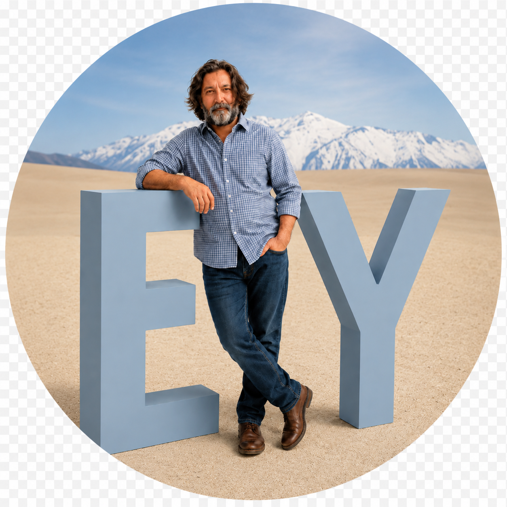

Helping B2B startups and scaleups move from product ambiguity to market execution.
I help technology companies turn complex products into clear market opportunities, practical use cases, investor-ready narratives, partner motions, and repeatable operating rhythms.
Founder-operator, board director, startup advisor, and TPG Consultant with 25+ years of strategic operations experience across B2B SaaS, AI/API products, cybersecurity, GRC, sport tech, consumer tech, edtech, hardware, and venture ecosystems.

About
I am a founder-operator, board director, startup advisor, and TPG Consultant with 25+ years of strategic operations experience. My work spans B2B SaaS, AI/API products, cyber governance, compliance, sport tech, consumer tech, edtech, hardware, venture ecosystems, U.S. market entry, and corporate innovation programs.
I am a commercially technical operator who translates between founders, technical teams, investors, enterprise customers, strategic partners, and board-level stakeholders. I am comfortable with API documentation, basic API testing, SQL-based workflows, prompt structuring, AI-assisted research and writing, product requirements, GTM narratives, and partner enablement.
My background also includes elite ski racing coaching — helping talented people perform at the edge without blowing up. I bring that same discipline to startups: find the line, manage speed, and turn pressure into outcomes.
Selected Work
Secberus — Co-Founder, Board Director & Founder-Operator
Co-founded a cyber governance and compliance technology company, operating across product commercialization, partnerships, GTM, strategic operations, board governance, customer development, and lean-company execution.
- Led business-side positioning for the shift from a traditional SaaS governance platform toward AI-first compliance tools, including the Compliance Mapping AI API, GRC Agentic AI workflows, and gap analysis capabilities.
- Owned the business-side initiative to introduce a Text-to-SQL AI co-pilot into the flagship governance platform.
- Originated the concept and mathematical model for a risk algorithm, later developed with the CTO and engineering team; named co-inventor on the related patent.
- Built OEM and channel partnership motions across VARs, GSIs, MSSPs, consultancies, security platforms, GRC ecosystem partners, and enterprise technology vendors.
- Repositioned Secberus from a platform-led SaaS story to clearer enterprise, partner, and developer-facing narratives around compliance mapping, gap analysis, AI-enabled workflows, and automation.
TPG Consulting — Consultant
Consulting across business planning, GTM strategy, software and product assessment, fundraising narratives, partnerships, international expansion, startup evaluation, investor readiness, and interim execution.
Startup, Advisory & Venture Ecosystem Roles
Advised and mentored founders through Polestar Strategies, Startup Leadership Program, UAEU Science & Innovation Park, Hamilton Venture Network, French Tech Hub, The Refiners, and Trivium Venture Network.
Earlier Operating Experience
Led experiential marketing and Silicon Valley innovation tours for global technology and enterprise clients, founded an early sport-tech company, supported technology market development, and coached elite ski racing, including work connected to World Cup competition and NBC's 2006 Olympic marketing production.
Selected Impact
- AI/API and software commercialization: helped position and commercialize cyber governance, compliance, AI, and API products for enterprise customers, MSSPs, consultancies, GRC platforms, and technology partners.
- Startup and founder advisory: advised founders on product clarity, business models, GTM strategy, fundraising narratives, operating priorities, investor and customer readiness, and revenue paths.
- Investor readiness and venture advisory: advise Trivium Venture Network on startup presentation, investment thesis framing, founder pitch feedback, and venture network growth strategy.
- International market entry: mentored foreign startups entering the U.S. market through French Tech Hub and The Refiners, including positioning, pitch refinement, partner development, and U.S. market readiness.
- Corporate innovation and ecosystem exposure: managed Silicon Valley innovation tours for established enterprises, connecting executives with startups, technology companies, and venture ecosystem participants.
Where I Can Help
AI/API Product Commercialization
Positioning, GTM narratives, product-to-market messaging, API-enabled workflows, AI-assisted research, prompt and workflow concepts, and technical-to-commercial translation.
Partnerships & Ecosystem Development
Strategic partnerships, channel motions, OEM opportunities, partner enablement, enterprise technology ecosystems, and partner-led growth.
Startup Strategy & Operating Rhythm
Founder support, business planning, operating priorities, project and program management, cross-functional execution, and repeatable operating motions.
Investor & Board Readiness
Fundraising narratives, investor presentations, board materials, diligence support, venture storytelling, and strategic planning.
U.S. Market Entry & International Expansion
Market-entry strategy, positioning, customer discovery, partner development, ecosystem navigation, and go-to-market readiness for foreign startups entering the U.S.
Corporate Innovation Programs
Innovation tours, executive experience design, startup ecosystem exposure, venture-backed trend interpretation, and enterprise/startup partnership opportunities.
Peak performance lives on the edge.
In elite ski racing, the edge is not what separates performance from failure — it is where performance happens. Winning requires developing and managing speed, making split-second decisions, and recovering quickly when the edge slips. I bring the same discipline to startup work: move fast, adjust early, and keep the team aligned before momentum turns into chaos.
Speed
Develop and manage speed without losing the edge.
Control
Create enough structure to let smart teams move fast under pressure.
Performance
Turn pressure into outcomes, not motion.
Tools & Technical Fluency
CRM and revenue operations platforms · productivity and collaboration suites · financial and administrative systems · HR, payroll, and people operations tools · project and workflow management platforms · AI and automation tools · sales, marketing, and content management systems · spreadsheet-based reporting and data analysis · API documentation review and technical requirements analysis · SaaS platform integration and workflow automation · GRC technologies · compliance readiness and risk management solutions · cybersecurity and cloud security platforms · regulatory compliance and security technology workflows.
Industry Knowledge
Contact
I am open to remote or hybrid consulting, advisory, and operating roles across France, the EU, UK, and U.S. time-zone overlap, especially with B2B startups, scaleups, venture-backed teams, consulting firms, and technology companies working on AI-enabled workflows, cybersecurity, GRC, startup ecosystems, international expansion, and practical governance infrastructure.